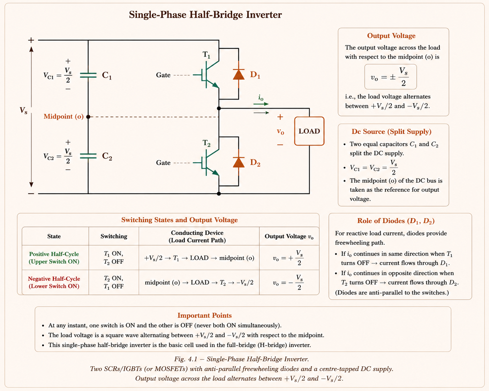
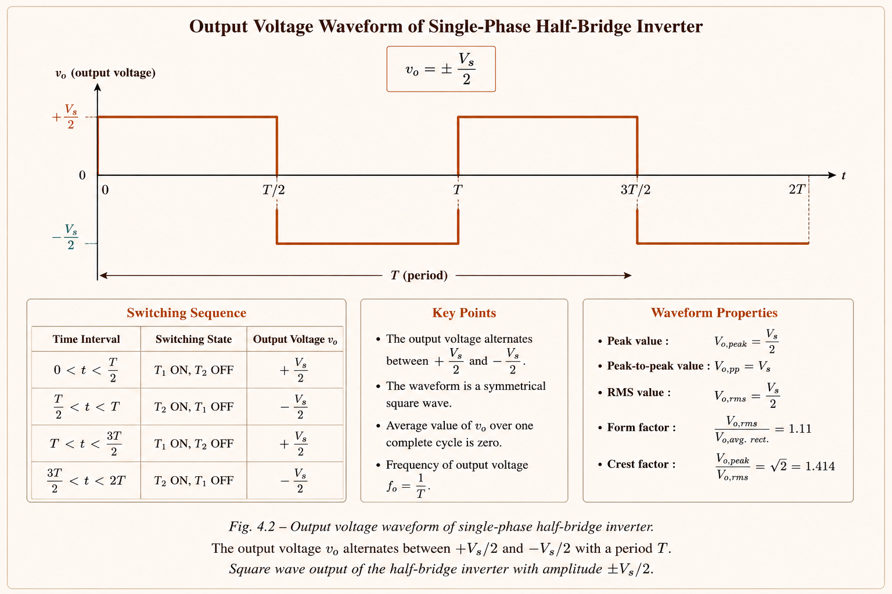
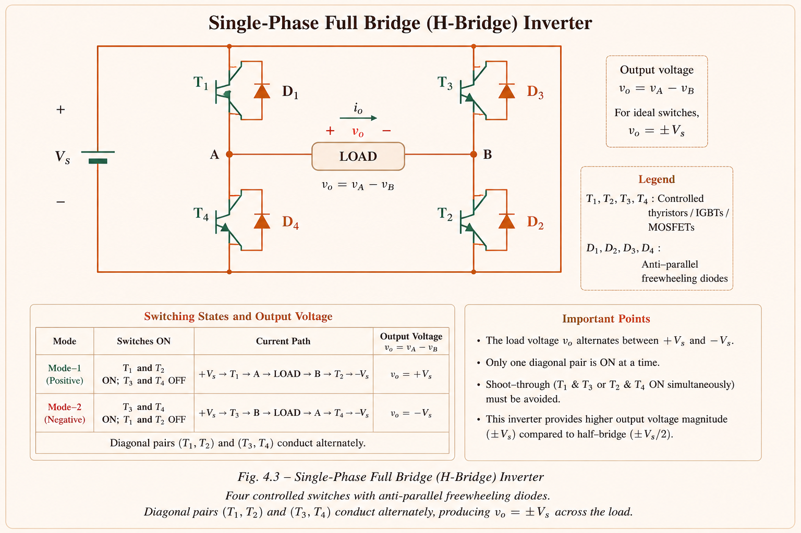
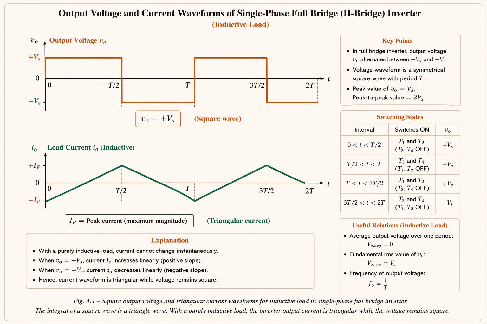
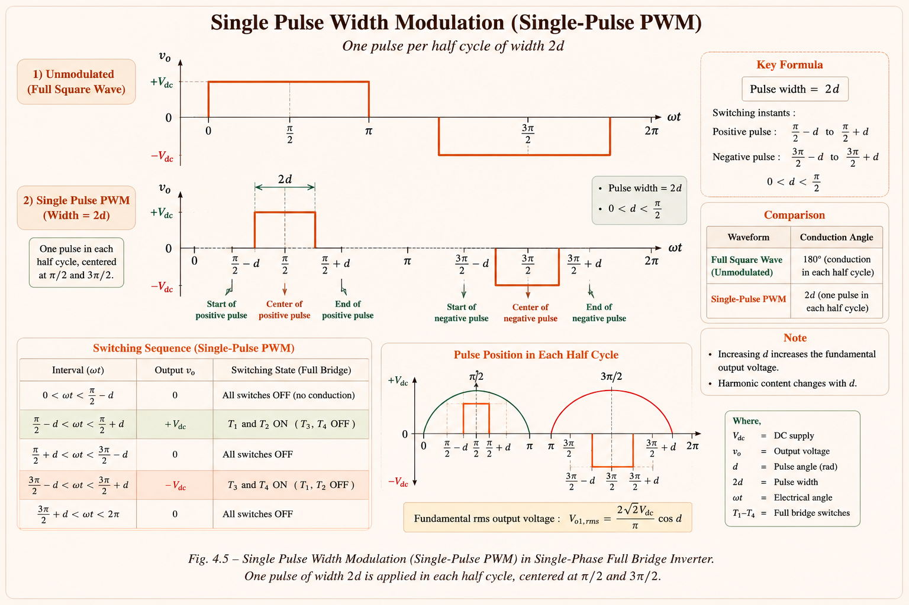
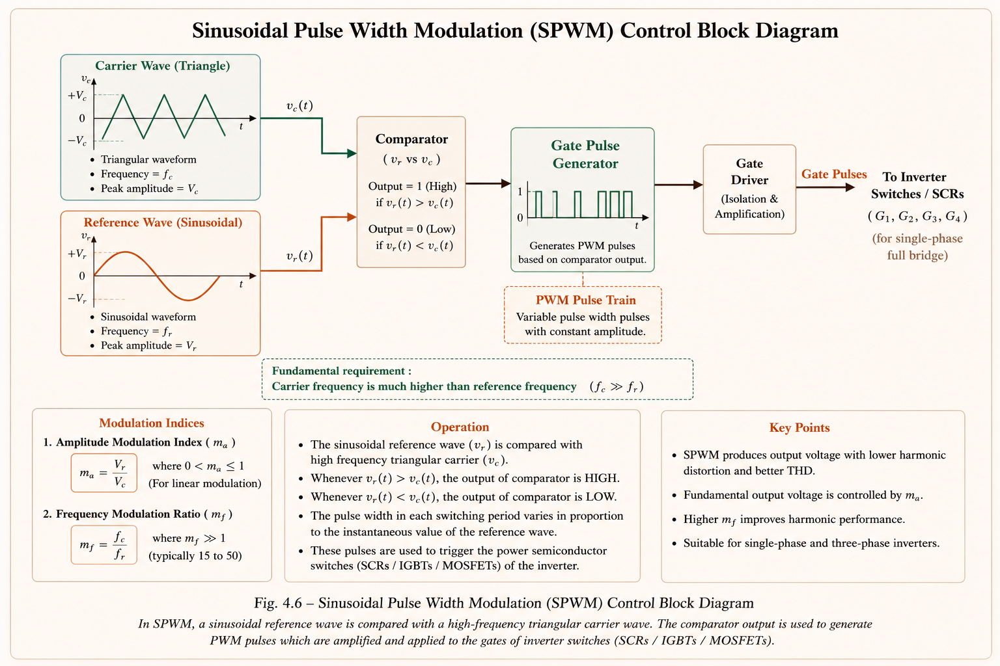
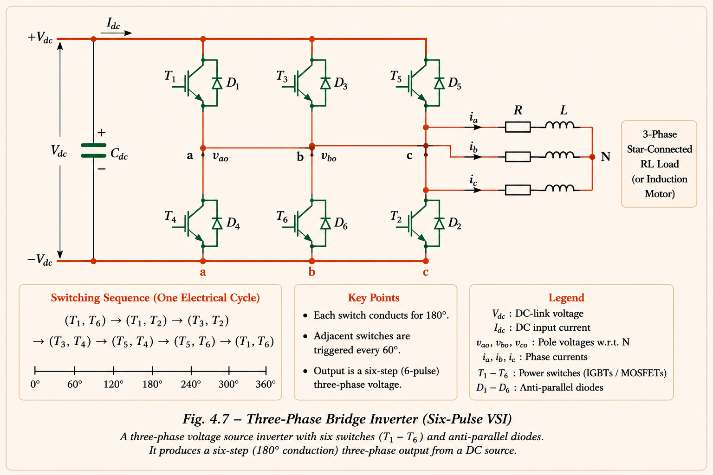
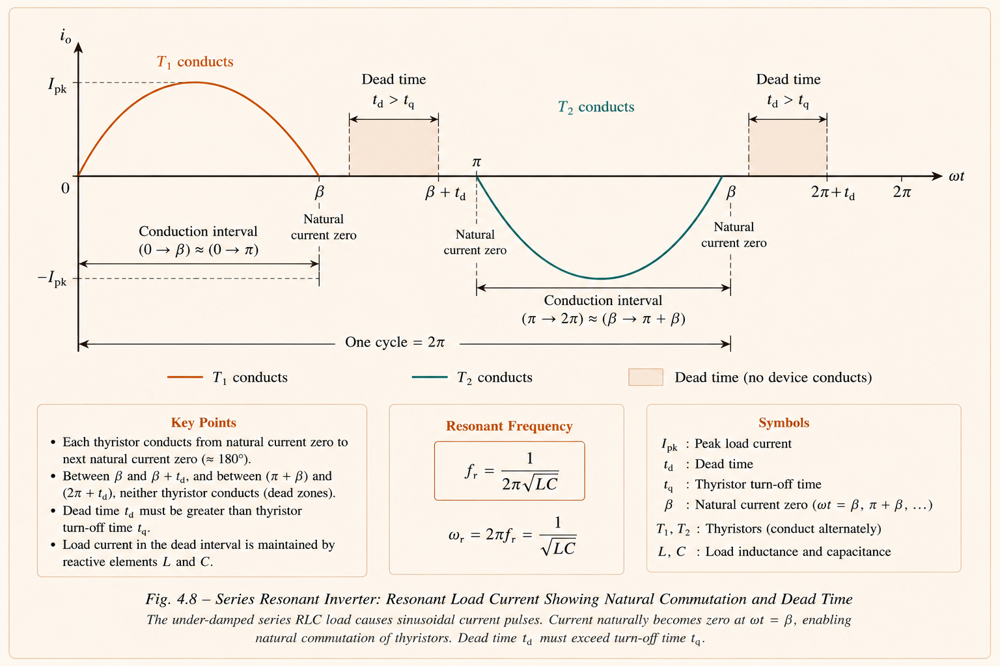

Static power electronic circuits that convert a fixed DC input into a variable AC output — controlling magnitude, frequency, and number of phases. Covered completely for GATE EE, IES E&T, and PSU examinations.
An inverter is a static power electronic circuit that accepts a DC input and delivers an AC output whose magnitude, frequency, and number of phases can all be varied under electronic control. [1] The word "static" distinguishes it from rotating machinery — there are no moving parts.
Think of an inverter as a faucet on a DC pipe. The DC supply is like water pressure always pushing in one direction. The inverter's switches (SCRs, MOSFETs, IGBTs) act like paddle-valves that reverse the water direction rapidly — creating alternating flow. The rate of reversal sets the output frequency, and how wide the paddle opens sets the output voltage magnitude.
The world's primary energy sources — batteries, photovoltaic cells, fuel cells, rectified DC from rectifiers — deliver DC power. Yet the global grid and almost all industrial motors, heating systems, and lighting operate on AC. Inverters are therefore the universal interface between DC energy storage or generation and the AC world.
Know the two primary classification axes: source type (VSI vs CSI) and commutation method (line commutated vs forced commutated). GATE often presents a pair of statements and asks which are correct.
| Criterion | Voltage Source Inverter (VSI) | Current Source Inverter (CSI) |
|---|---|---|
| Input source | Stiff DC voltage (capacitor at input) | Stiff DC current (large inductor at input) |
| Output waveform | Voltage is square/PWM; current depends on load | Current is square; voltage depends on load |
| Feedback diodes | Always required (for reactive loads) | Not required; load is capacitive |
| Preferred load | Inductive loads (motors) | Capacitive loads |
| Short circuit | Dangerous — source short-circuits | Tolerated — current limited by inductor |
Many students write "both VSI and CSI require feedback diodes." This is wrong. Only VSI requires feedback (freewheeling) diodes. CSI does not need them because the current source inductor itself prevents sudden current reversal. Anti-parallel diodes are needed in VSI for all loads except purely resistive.
A line commutated inverter is essentially a phase-controlled rectifier operating with firing angle \(\alpha > 90°\). It transfers energy from DC to an existing AC supply network. Here the AC supply itself provides the commutating voltage, so the output frequency and phase are fixed by the supply — they cannot be independently controlled. This topology is used in HVDC power reversal applications.
A forced commutated inverter uses its own internal circuit (auxiliary capacitors, inductors, or gate-turn-off devices like GTOs, IGBTs, MOSFETs) to turn off conducting thyristors. The output frequency, voltage, and waveform shape are all freely controllable. This is the category used in motor drives, UPS, and solar inverters.
The half bridge is the most elemental inverter topology. It uses two switches (SCRs or IGBTs) and two equal voltage sources — typically realised by splitting the DC bus with two capacitors. Understanding it is essential before studying the full bridge.

Two SCRs with anti-parallel freewheeling diodes, centre-tapped DC supply. Output voltage alternates between +Vs/2 and −Vs/2.
The DC supply is split into two equal halves of \(V_s/2\) each using a capacitor voltage divider. During the first half cycle \(0 \lt t \le T/2\), thyristor T₁ is triggered and conducts — the load sees \(+V_s/2\). At \(t = T/2\), T₁ is commutated (force turned off) and T₂ is triggered — the load sees \(-V_s/2\) for the second half cycle. The result is a square wave of amplitude \(V_s/2\) and frequency \(f = 1/T\).[1,2]
The output frequency can be varied by changing the periodic time \(T\). Anti-parallel (freewheeling) diodes D₁ and D₂ are required for all loads except purely resistive ones — they carry the reactive component of load current when the thyristors are OFF.

Square wave output of the half bridge inverter. Amplitude = Vs/2, frequency = 1/T. The waveform is then filtered to reduce harmonics.
At any instant the load voltage is only half the available supply voltage. The source utilisation factor is 50%, which makes the half bridge inefficient. This is the primary reason the full bridge inverter is preferred in practice — it uses 100% of the supply voltage.
The full bridge (H-bridge) uses four switches (T₁–T₄) arranged in two legs, with four anti-parallel freewheeling diodes (D₁–D₄). It delivers the full supply voltage \(V_s\) across the load, giving 100% source utilisation.

Four thyristors with freewheeling diodes. Diagonal pairs (T₁,T₂) and (T₃,T₄) conduct alternately, delivering ±Vs across the load.
Thyristors are triggered in diagonal pairs to ensure current always flows through the load. The triggering sequence is:
| Interval | Thyristors ON | Load Voltage V₀ | Freewheeling Path (inductive load) |
|---|---|---|---|
| \(0 \lt t \le T/2\) | T₁, T₂ | +Vs | D₃, D₄ carry negative current at start |
| \(T/2 \lt t \le T\) | T₃, T₄ | −Vs | D₁, D₂ carry positive current at start |
Rule: If all four thyristors conduct simultaneously the DC source is short-circuited. To prevent this, only one diagonal pair is triggered at any time.
For the same DC supply \(V_s\): Full bridge output voltage is twice the half bridge output, and output power is four times greater. The full bridge is always preferred in high-power applications.
An ideal inverter would produce a perfect sinusoid. In practice, square wave inverters produce a rich harmonic spectrum. Fourier analysis decomposes the output into its fundamental and harmonic components — this is the mathematical foundation for understanding THD, filter design, and motor heating.
A square wave with half-cycle symmetry contains only odd harmonics (n = 1, 3, 5, 7, …). Even harmonics are absent.
The coefficient doubles from half bridge to full bridge because the output amplitude doubles from \(V_s/2\) to \(V_s\).
For a general RLC series load, each harmonic sees a different impedance \(Z_n\). The nth harmonic current component is:
The amplitude of the nth harmonic voltage is proportional to \(1/n\). So the 3rd harmonic is 1/3 of the fundamental, the 5th is 1/5, and so on. At the same time, the harmonic impedance increases with n (due to the inductive term \(n\omega L\)). Therefore, higher-order harmonic currents are doubly attenuated — both the voltage driving them and the current they produce decrease with increasing harmonic order. Inductance acts as a natural low-pass filter.
When feeding a purely inductive load, the current waveform is triangular (integral of a square wave). The key relationships are:

The integral of a square wave is a triangle wave. With a purely inductive load, the inverter output current is triangular while the voltage remains square.
Three key metrics characterise the quality of an inverter's output waveform. Every GATE/IES aspirant must be able to compute and interpret them.
The harmonic factor of the nth harmonic measures how large the nth harmonic component is relative to the fundamental. Defined as the ratio of the rms value of the nth harmonic voltage to the rms value of the fundamental component:
where \(V_n\) = rms of nth harmonic, \(V_{01}\) = rms of fundamental.
THD is the most important single-number quality metric for an inverter. It is the ratio of the rms value of all harmonic components combined to the rms value of the fundamental. A lower THD means a better (cleaner) waveform. [1,3]
You are given \(V_{or}\) (total rms output) and need THD. First find \(V_{01}\) (fundamental rms). For a square wave full bridge: \(V_{01} = \frac{4V_s}{\pi\sqrt{2}} = \frac{2\sqrt{2}V_s}{\pi}\). Then plug into the formula. For a half bridge, replace \(V_s\) with \(V_s/2\).
Distortion factor is the reciprocal perspective of THD — it tells what fraction of the total output is the useful fundamental component. The distortion factor of individual harmonics is also defined:
| Metric | Formula | Ideal Value | Physical Meaning |
|---|---|---|---|
| Harmonic Factor HFₙ | \(V_n / V_{01}\) | 0 | Relative size of nth harmonic |
| THD | \(V_{oh}/V_{01}\) | 0% | Overall waveform distortion |
| Distortion Factor | \(V_{01}/V_{or}\) | 1.0 | Fraction of output that is fundamental |
In practical drives and UPS, the output voltage magnitude must be adjustable. Three methods are used, each with different complexity and harmonic performance.
In single pulse modulation, one pulse of width \(2d\) appears per half cycle. The output pulse is centred in each half cycle. This is the simplest PWM method.

To eliminate the 3rd harmonic using single pulse modulation, set \(2d = 2\pi/3 = 120°\). To eliminate the 5th harmonic, set \(2d = 2\pi/5 = 72°\). This is tested repeatedly in GATE and IES — memorise the formula \(2d = 2\pi/n\).
To reduce lower-order harmonics while maintaining reasonable output voltage, multiple equal-width pulses per half cycle are used. If there are \(N\) pulses per half cycle:
As number of pulses per half cycle increases, lower-order harmonic amplitudes reduce BUT higher-order harmonics increase. More pulses also increase switching frequency, raising switching losses in the thyristors. The number of pulses is economically chosen to balance harmonic reduction against switching duty.
Sinusoidal PWM compares a high-frequency triangular carrier wave (frequency \(f_c\)) against a low-frequency sinusoidal reference wave (frequency \(f_r\)). Whenever the reference exceeds the carrier, the upper switch of a leg conducts; otherwise the lower switch conducts. This produces a train of pulses whose widths vary sinusoidally — the output contains primarily the fundamental and harmonics around \(2N \pm 1\) order.

When \(M_a \lt 1\), largest harmonic amplitudes appear at orders \(2N \pm 1\). Increasing \(N\) pushes harmonics to higher frequencies — easier to filter.
The three-phase bridge inverter uses six thyristors (T₁–T₆) arranged in three legs, each leg corresponding to one output phase (a, b, c). The two operating modes — 180° conduction and 120° conduction — produce different waveform shapes and are tested heavily in GATE and IES.

In 180° mode, each SCR conducts for exactly 180° (half a cycle). At any instant, three SCRs are simultaneously conducting. The triggering sequence is T₁→T₂→T₃→T₄→T₅→T₆ with 60° intervals between successive triggers.
| Parameter | 180° Mode | 120° Mode |
|---|---|---|
| SCR conduction duration | 180° | 120° |
| SCRs conducting simultaneously | 3 at any time | 2 at any time |
| Phase voltage shape | Three-stepped waveform | Quasi-square wave |
| Line voltage shape | Quasi-square wave | Three-stepped waveform |
| RMS Line Voltage | \(0.8165\,V_s\) | \(0.7071\,V_s\) |
| RMS Phase Voltage | \(0.4714\,V_s\) | \(0.4082\,V_s\) |
| Short circuit risk | Source short if 180° overlap occurs | Safer — no simultaneous commutation |
In 180° mode, every SCR conducts for exactly half a cycle — each SCR is equally loaded. In 120° mode, there is a 60° dead band when one phase's SCR is neither connected to the positive nor negative bus. For an unbalanced load, the voltage during this floating interval is indeterminate. Hence 180° mode is more commonly used despite the theoretical short-circuit risk at the 180° commutation boundary.
A key advantage of the 3-phase bridge is that all triple harmonics (3rd, 9th, 15th, …) are absent from the line voltage. This is because:
All line voltages are free from 3n harmonics. The lowest-order harmonic present is the 5th.
In a series inverter, the commutating components (L and C) are permanently connected in series with the load, forming an RLC circuit. The series circuit must be under-damped so that the current naturally oscillates through zero — this causes automatic thyristor turn-off without external forced commutation circuitry.

The under-damped RLC load causes sinusoidal current pulses. T₁ turns off naturally at zero crossing. The dead time T_off must exceed t_q (thyristor turn-off time).
Condition for commutation: \(T_{off} \gt t_q\) (thyristor's rated turn-off time).
In a CSI, the input is maintained as a stiff current source by a large series inductor. The output current waveform is square (forced by the constant input current), while the output voltage waveform is determined by the load. CSI is preferred for capacitive loads and has the advantage that load short circuits do not damage the inverter — the inductor limits current rise.
| Property | VSI | CSI |
|---|---|---|
| Input storage element | Capacitor (stiff voltage) | Inductor (stiff current) |
| Output current shape | Sinusoidal (load-dependent) | Square wave |
| Output voltage shape | Square/PWM | Depends on load |
| Feedback diodes needed? | Yes | No |
| Short circuit tolerance | Dangerous | Tolerated |
| To get output frequency f | Trigger at f | Trigger at 2f |
When CSI feeds a capacitive load, the output voltage is triangular (integral of square current). The peak voltage is \(V_p = (I/C)(T/4)\) and peak-to-peak is \(V_{pp} = (I/C)(T/2)\). The output voltage frequency is half the input current switching frequency.
Concept: Which statement about feedback diodes in inverters is correct?
Explanation: In VSI, when a thyristor is turned off with an inductive load, the load current must continue to flow — the freewheeling (feedback) diodes provide the path. In CSI, the input inductor maintains a constant current, so no freewheeling path is needed. GTOs are self-commutating devices used in VSI, not typically in CSI.
Concept: In single pulse modulation of a PWM inverter, the 3rd harmonic can be eliminated if the pulse width \(2d\) equals:
Solution: To eliminate nth harmonic: \(\sin(nd) = 0 \Rightarrow nd = \pi \Rightarrow d = \pi/n\). For n = 3: \(d = \pi/3 = 60°\), so \(2d = 120°\). The pulse width \(2d\) must equal \(2\pi/n = 2\pi/3 = 120°\).
Concept: In a 3-phase bridge inverter operating in 180° mode, the number of thyristors conducting at any instant is:
Explanation: In 180° mode, each SCR conducts for 180°. Since the six SCRs are triggered 60° apart in sequence, at any given instant exactly three are conducting — one from the upper group and two from the lower group, or vice versa. This is a fundamental property of the 180° mode.
Concept: A 1-phase full bridge VSI has a 200 V DC source. Load: R = 1 Ω, ωL = 6 Ω, 1/ωC = 7 Ω in series. Identify the fundamental load current expression.
Solution: \(V_{01}\) (fundamental rms) \(= 0.9 \times 200 = 180\) V. \(Z_1 = \sqrt{1^2 + (6-7)^2} = \sqrt{2}\). \(I_{01} = 180/\sqrt{2} = 180/\sqrt{2}\) — peak \(= 180\) A. Since \(X_C \gt X_L\), load is capacitive → current leads voltage by 45°. Answer: \(i_0 = 180\sin(\omega t + 45°)\).
Two SCRs, centre-tapped supply. \(V_{or} = V_s/2\). 50% source utilisation. Requires anti-parallel diodes for reactive loads. Output is square wave of amplitude \(V_s/2\).
Four SCRs in H-bridge. \(V_{or} = V_s\). 100% source utilisation. Diagonal pairs (T₁,T₂) and (T₃,T₄) triggered alternately. Power = 4× half bridge for same supply.
Square wave has only odd harmonics (n = 1,3,5…). \(V_{01} = 2\sqrt{2}V_s/\pi\) (HB), \(4V_s/\pi\sqrt{2}\) (FB). THD = \(\sqrt{(V_{or}/V_{01})^2-1}\).
Single pulse: \(2d = 2\pi/n\) eliminates nth harmonic. SPWM: modulation index \(M_a = V_r/V_c \le 1\). Higher N → harmonics shift to higher frequencies → easier filtering.
180° mode: 3 SCRs ON, \(V_L = 0.8165V_s\). 120° mode: 2 SCRs ON, \(V_L = 0.7071V_s\). All 3n harmonics absent in line voltage. Lowest harmonic is 5th.
VSI: capacitor input, voltage-stiff, needs feedback diodes, suits inductive loads. CSI: inductor input, current-stiff, no feedback diodes needed, suits capacitive loads, short-circuit tolerant.
AC Voltage Controllers and Cycloconverters — single-phase and three-phase AC voltage controllers, on-off and phase-angle control, firing angle range, integral cycle control, and cycloconverter operation with complete GATE & IES concepts.
All technical content is derived from the following standard textbooks and resources. All explanations, derivations, diagrams, and conceptual content are original to Aarova AI.